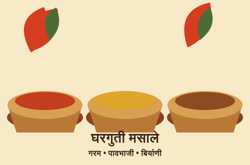
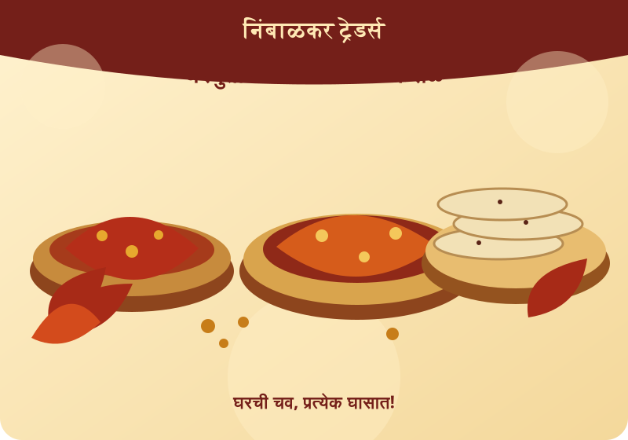
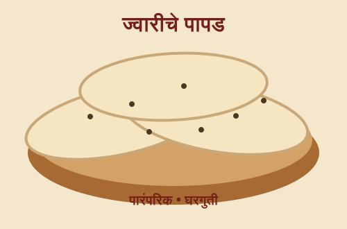
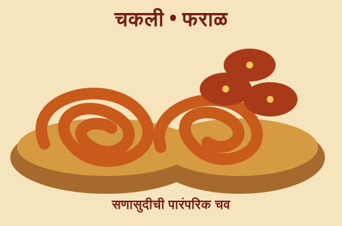
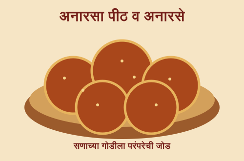

मसाले
घरगुती मसाले
गरम मसाला • पावभाजी मसाला • बिर्याणी मसाला • चिकन मसाला • मटण मसाला • शाही पनीर मसाला
मसाल्यांसाठी चौकशी करा ↗घरगुती • पारंपरिक • अस्सल
निवडक मसाले आणि पारंपरिक खाद्यपदार्थ. रोजच्या स्वयंपाकासाठी आणि सणासुदीच्या खास प्रसंगांसाठी.
✦ घरगुती चव ✦ खास ऑर्डर स्वीकारल्या जातात

चव पारंपरिक!आमच्याबद्दल
निंबाळकर ट्रेडर्स येथे घरगुती मसाले, मसाल्याचे पदार्थ, पापड आणि पारंपरिक फराळाचे पदार्थ उपलब्ध आहेत. रोजच्या जेवणापासून सणासुदीच्या खास पदार्थांपर्यंत, आपल्या आवडीनुसार चौकशी आणि खास ऑर्डर स्वीकारल्या जातात.
उत्पादनांची उपलब्धता, प्रमाण आणि ऑर्डरची वेळ जाणून घेण्यासाठी WhatsApp वर संपर्क करा.
आमची उत्पादने
खालील पदार्थांसाठी ऑर्डर आणि उपलब्धतेची चौकशी करा.

गरम मसाला • पावभाजी मसाला • बिर्याणी मसाला • चिकन मसाला • मटण मसाला • शाही पनीर मसाला
मसाल्यांसाठी चौकशी करा ↗


टीप: उत्पादनांची यादी नमुना स्वरूपात आहे. सध्याची उपलब्धता आणि दर WhatsApp वर निश्चित करा.
सणासुदीची खास तयारी
घरगुती मसाले आणि पारंपरिक फराळासाठी आजच चौकशी करा.
ऑर्डरची चौकशी कराफोटो संग्रह
तुमचा अभिप्राय महत्त्वाचा
Google Maps वर आमचे ठिकाण उघडा आणि Reviews विभागातून तुमचा अनुभव शेअर करा.
तुमचा अभिप्राय आम्हाला अधिक चांगली सेवा देण्यासाठी मदत करतो.
Google Maps उघडा ↗ऑर्डर व चौकशी
खाली माहिती भरा. तुमचा संदेश WhatsApp वर तयार होईल.
संपर्क: +91 70287 20156